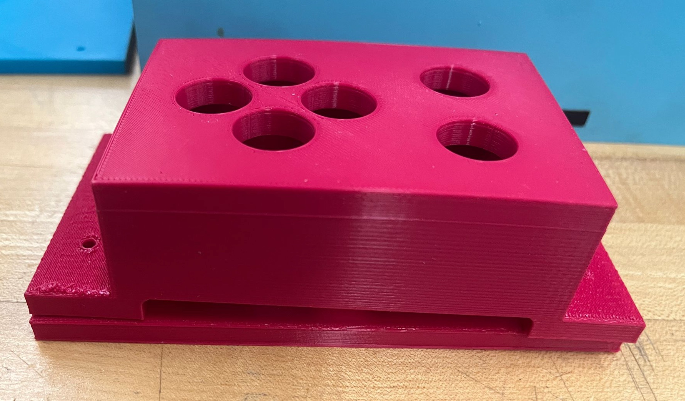

Mechanical Design Process
Table of Contents
Sprint 1
In this sprint, we focused on laying the groundwork for the arcade machine by building prototypes and refining measurements.
Goals:
- Create a functional button box to test ergonomics.
- Measure and confirm dimensions for key components:
- Screen placement.
- Button spacing and height.
- Test initial assembly techniques, such as using notches and wood glue for connections.

Challenges:
- Initial measurements needed adjustments to fit the 24”x18” MDF sheets and the monitor size.
- Ergonomic testing led to refinements in button spacing and control panel height.
Sprint 2
During Sprint 2, we transitioned from prototyping to designing the system in CAD and finalizing its structure.
Goals:
- Create detailed CAD models of all components.
- Incorporate features like:
- A slanted screen holder for better ergonomics.
- A modular control panel for easier troubleshooting and maintenance.
Key Updates:
- CAD models ensured precise alignment and fit for all parts.
- Laser cutter constraints were factored into the design, minimizing material waste.
Challenges:
- Balancing design complexity with fabrication constraints required iterative adjustments.
- Ensuring all components fit within the laser cutter's dimensions added design constraints.
Sprint 3
This sprint focused on fabrication, assembly, and resolving challenges encountered during the build process.
Goals:
- Cut parts from MDF using laser cutters.
- Paint inner and outer panels using gouache and spray paint, respectively.
- Assemble the system with wood glue and sanded joints for durability.
Final Updates:
- Successfully assembled the arcade system with modular features for maintenance and upgrades.
- Painted surfaces added durability and aesthetics.
Challenges:
- Wood glue issue: It didn’t adhere well to painted surfaces, requiring joint areas to be sanded for a proper bond.
- Assembly required precision to fit parts seamlessly after adjustments.
Design Decisions
The arcade controller is a problem of ergonomics. We chose to keep the right and left hand relatively close to each other so that it would be possible to use one hand. However, they are angled so that the arms would naturally bend to press the buttons. Additionally, since we expected the user to play standing up, we raised the controls to be about 3 inches over the table, with a 6° incline towards the screen. Button distance and angles were determined based off of team member hands. Most arcade machines use a joystick, but a joystick does not make sense for the context of our game. Thus, we incorporated a D-pad design.
For the arcade cabinet, we were constrained by the monitor size (24 inch screen with considerable margins) and the maximum size sheet that the laser cutter can cut (24”x18”). Another consideration that arises was the screen height. We expect that this tabletop arcade will be played standing up. Thus, the controller and screen should be put at a certain height. Additionally, the screen should be tilted so that it is directly facing a standing up user.
Challenges
Access to the monitor’s power button presented an interesting challenge. Unlike traditional monitors with rear or bottom facing buttons, our monitor used a tactile sensor located in the front. To overcome this challenge, we had to cut into the screen holder, which led into structural complications as it created a concentration of stress.
Progress Timeline
First Sprint
- First controller created
- Button integration
Second Sprint
- Second controller designed
- Integration plan with arcade panel
- First arcade CAD created
Third Sprint
- Finalized arcade CAD
- Laser cut and mount components
- Painting and aesthetic elements
Next Steps
With the mechanical assembly complete, the system is ready for integration with electrical and software components. The focus will shift toward refining usability and ensuring durability in real-world operation.
For more details, refer to the Project Overview.